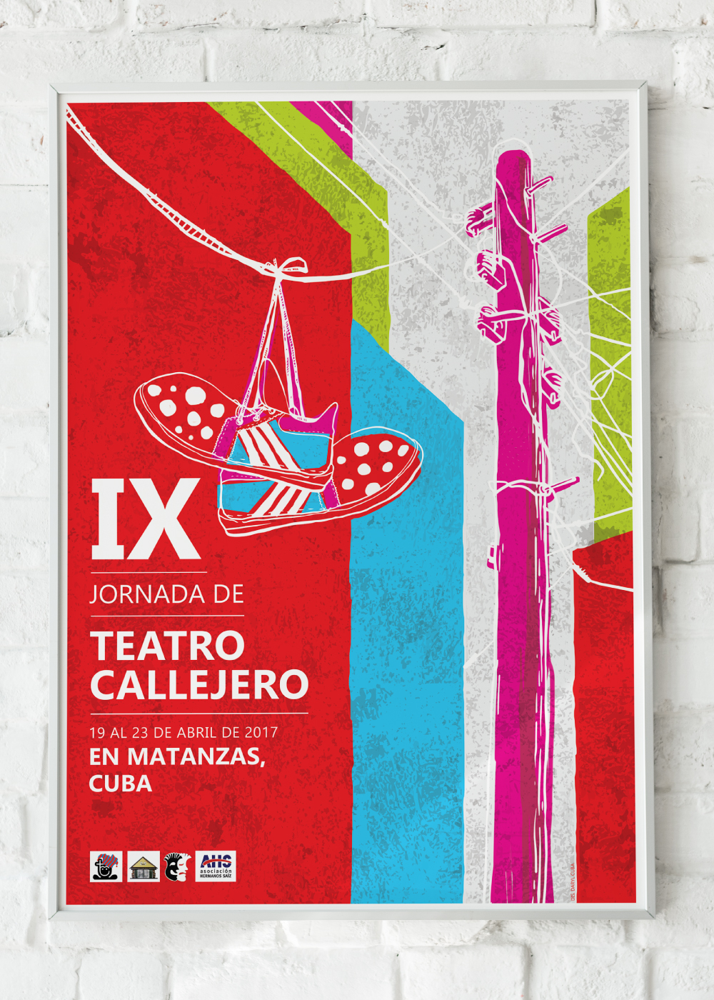
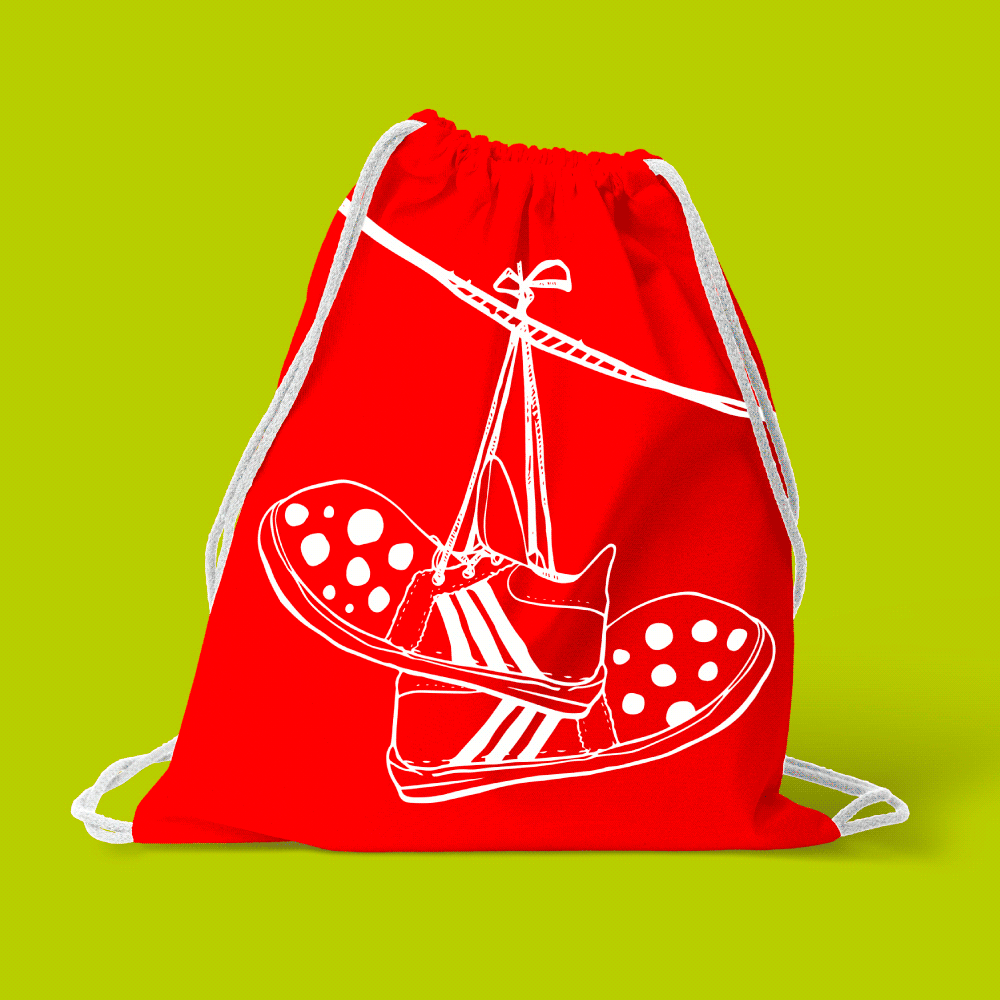
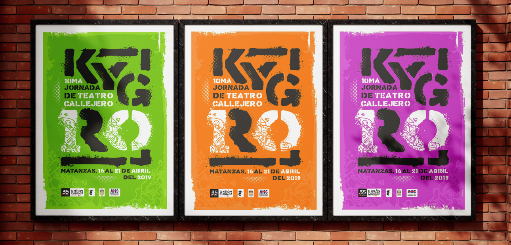
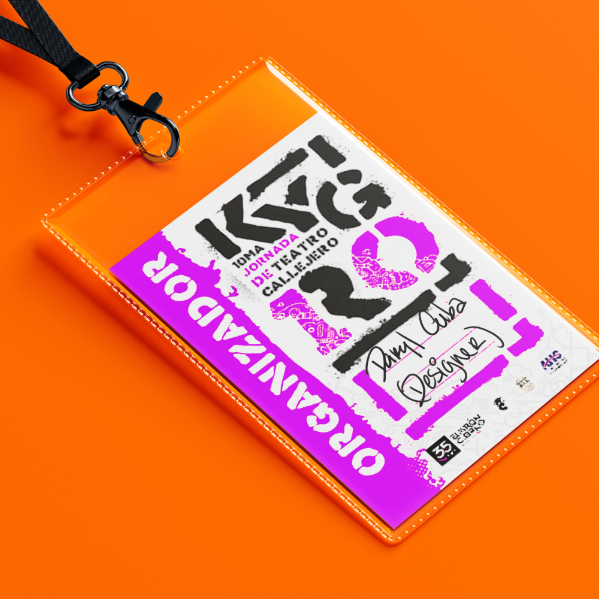
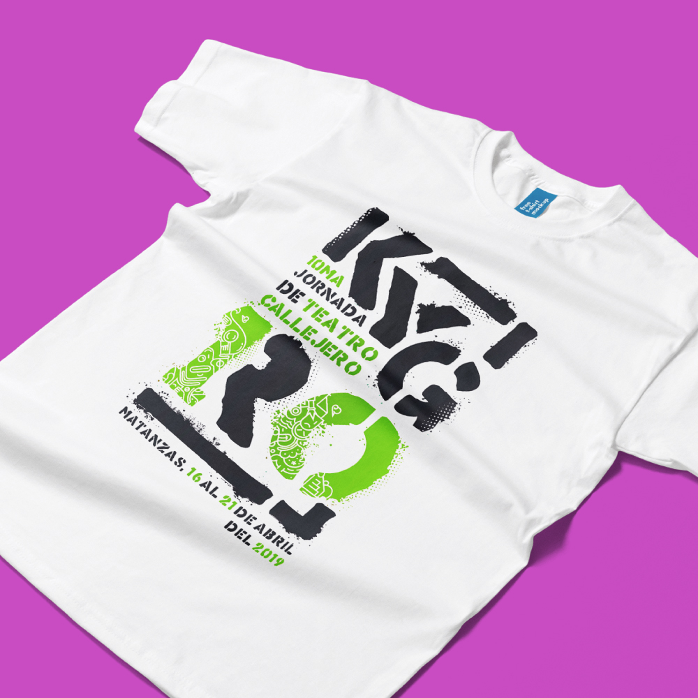
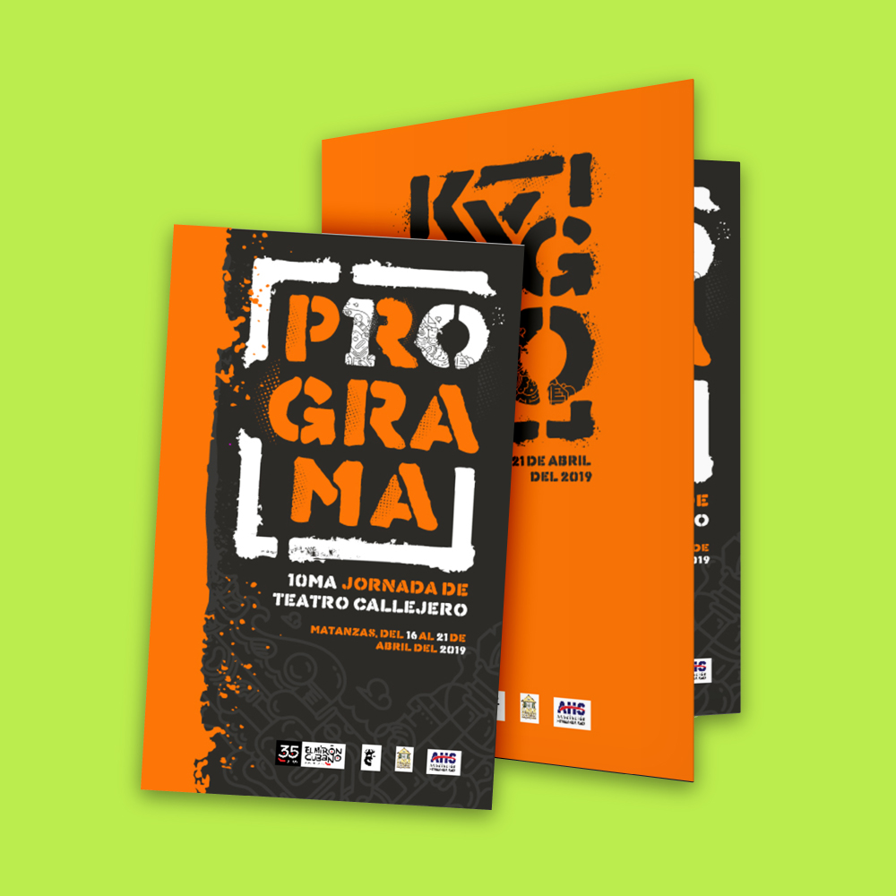
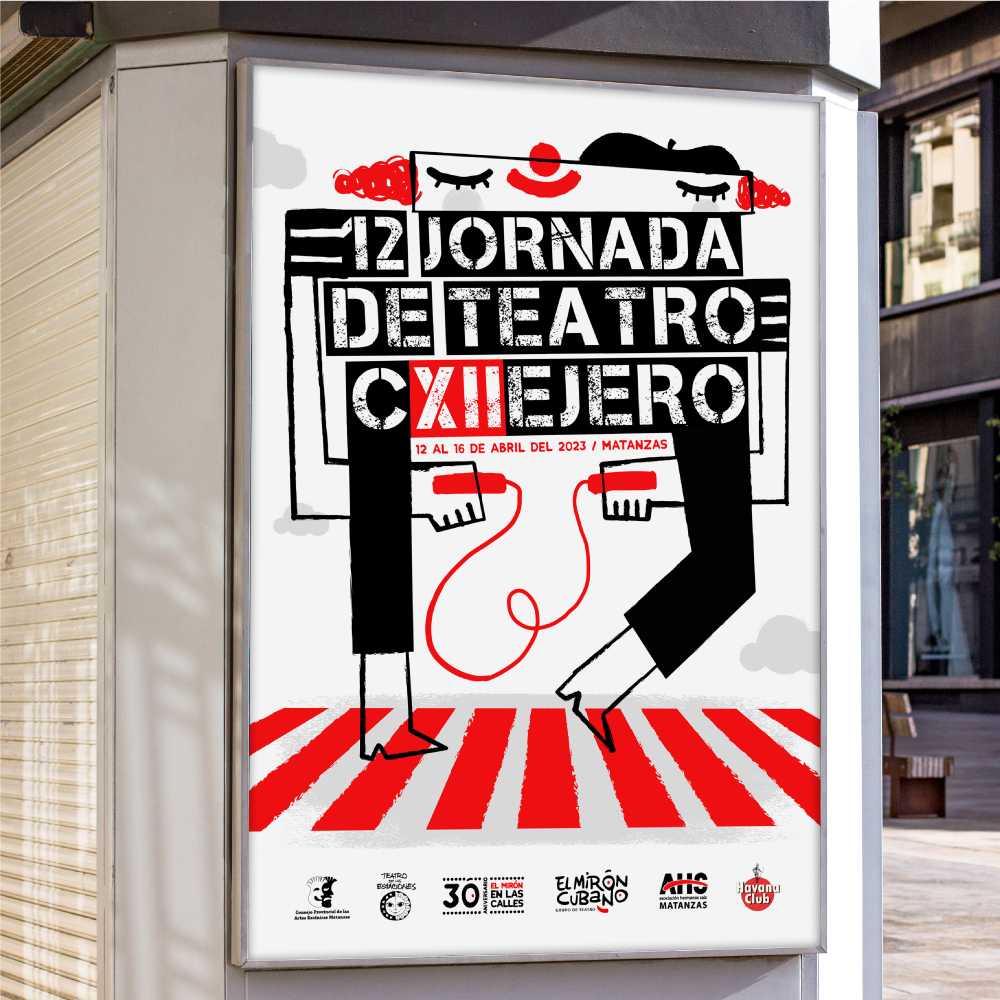
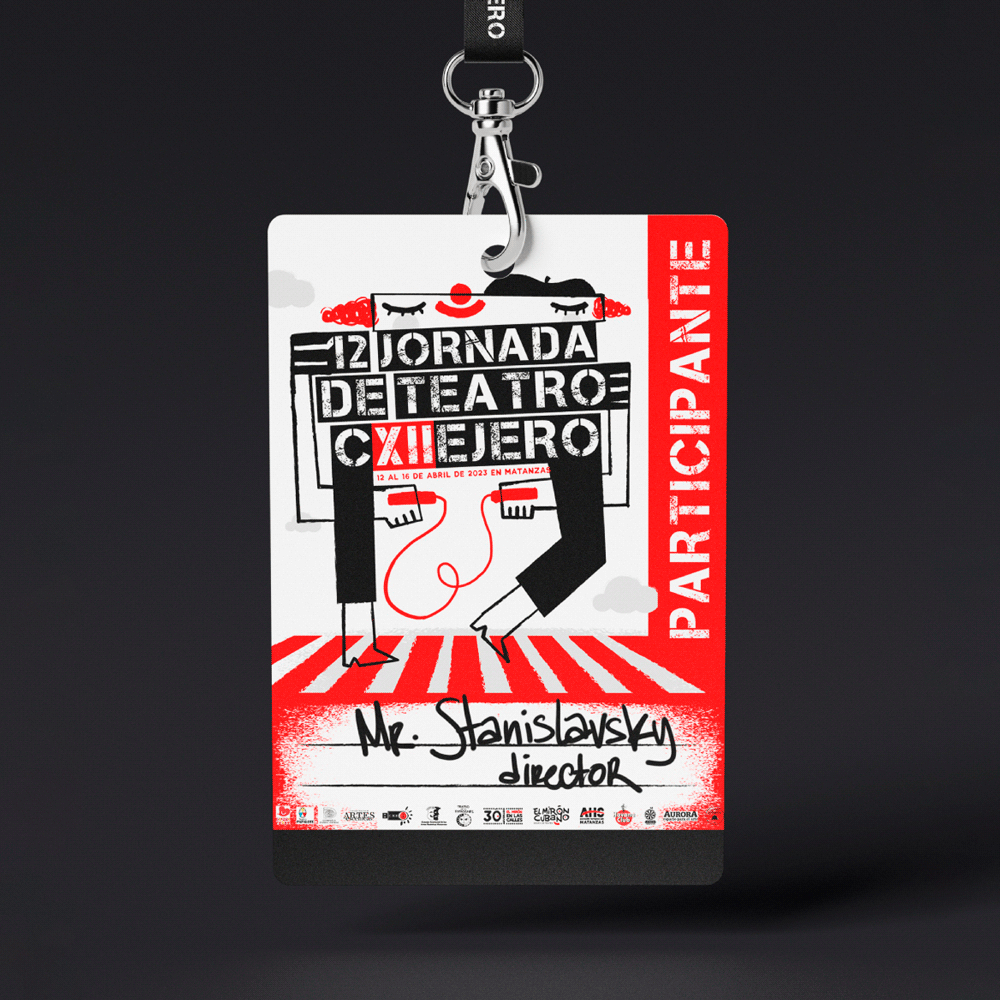
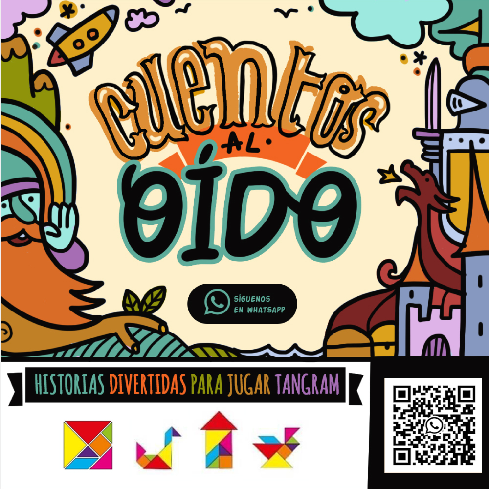
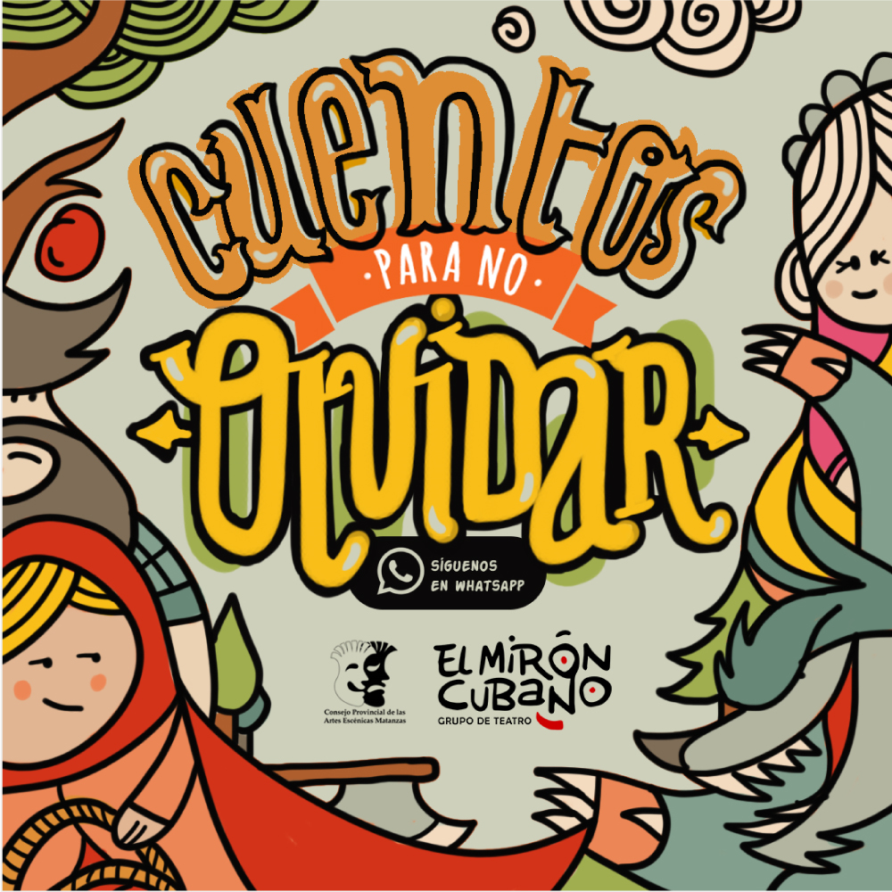

Bringing the visions of actors and directors to life through shape, color,
and atmosphere is one of the most rewarding aspects of design. From the magic
of children's puppet theater to the complexity of dramatic productions and
musical performances, every stage presents a unique opportunity to tell a
story through visual design.
The 'Festival de Teatro Rosa' (Pink Theater Festival) was one of Cuba's
first LGBTQ+ theater festivals, launched at a time when public support and
visibility for the community remained a sensitive topic. Contributing to the
visual identity of such a meaningful cultural event was both an honor and a
responsibility. I chose a bold yet approachable concept, using simple,
symbolic imagery infused with humor to communicate a message of inclusion, pride,
and celebration. The goal was to create an identity that was instantly recognizable,
emotionally engaging, and reflective of the courage and vision of the festival's
organizers and participants.
CALLEJERO IX


Over several consecutive editions, I had the opportunity to develop the visual identity
and animated television campaigns for El Callejero, the International Street Theater
Festival of Matanzas, Cuba. Recognized nationally and internationally, the festival
attracts artists and audiences who celebrate the unique spirit of street performance.
Designing the festival's identity year after year was an especially rewarding creative challenge. Each edition
required a fresh visual concept while preserving the event's recognizable character, resulting in distinctive
campaigns that reflected evolving themes and audiences.
My role encompassed the complete creative direction of the festival's visual communications, including branding, posters, billboards, programs, credentials, promotional merchandise, digital assets, and the design and production of the animated TV spots.
CALLEJERO X




For the festival's 10th edition, I developed a visual identity inspired by urban
and underground aesthetics, combining vibrant colors with phonetic-inspired typography
to appeal to a broader, younger audience. With an expanded program, the festival was organized into three categories — National, International, and Children's — each distinguished by its own signature color within the overall visual system. This flexible identity created a more dynamic and cohesive experience across all communication materials, including print, digital media, and the festival's TV spot.
CALLEJERO XII


The festival's post-pandemic edition was necessarily smaller in scale,
yet deeply meaningful for the performers who were finally able to return
to the streets and reconnect with live audiences. I once again had the
opportunity to develop the event's visual identity, this time embracing
a simpler aesthetic that reflected the contrast between the quiet
introspection of quarantine and the renewed energy and optimism of
live performance.
BEDTIME STORIES


During the pandemic, when lockdowns and social distancing reshaped everyday
life, the performing arts also had to find new ways to reach their
audiences. 'Teatro El Mirón Cubano', one of Cuba's most respected
children's theater companies, embraced digital platforms by adapting
many of its productions into online stories and social media content.
I had the opportunity to illustrate and promote this initiative by
creating a series of playful animated graphics that preserved the
imagination and charm of live theater while engaging young audiences
in a virtual environment.